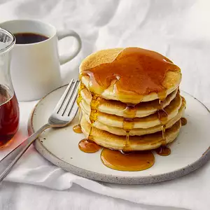

Vegan Pancake Recipe!

Description:
Are you vegan or did you ran out of eggs?
If that's so, this is the perfect breakfast for you!
Info:
- Cook: 20 mins
- Prep: 2 mins
- Serving: 4
Ingredients
- 4 cups self-rising flour
- 1 tablespoon white sugar
- 1 tablespoon custard powder
- 2 cups soy milk
Steps:
- In a large bowl, stir together the flour, sugar and custard powder.
Mix in the soy milk with a whisk so there are no lumps.
- Heat a griddle over medium heat, and coat with nonstick cooking spray.
Spoon batter onto the surface, and cook until bubbles begin to form on the surface.
Flip with a spatula and cook on the other side until golden.